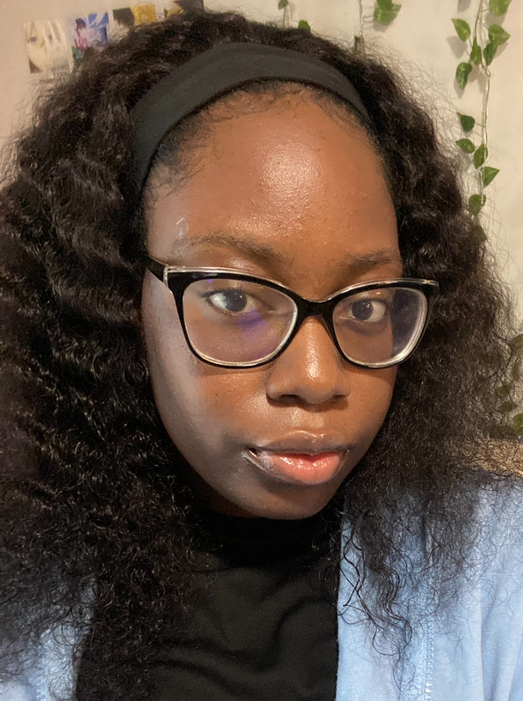

My name is Ann Ubaka, and I am currently a junior majoring in Computer Science with minors in Cybersecurity and Data Science. With a passion for technology and problem-solving, I am deeply committed to expanding my knowledge in these rapidly evolving fields. My academic journey has provided me with a solid foundation in both theoretical and practical aspects of computing.
I have developed proficiency in programming languages such as C++ and Python, which are my primary tools for tackling complex projects and solving coding challenges. In addition to my technical skills, I am highly interested in securing systems and data, which is why I chose to minor in Cybersecurity. My interest in Data Science also allows me to explore data-driven solutions and enhance my analytical skills.
As I look toward the future, I aim to specialize in Artificial Intelligence and Machine Learning. These areas offer incredible potential for innovation and impact across various industries. My goal is to contribute to the development of intelligent systems that can revolutionize the way we live and work, while continuing to grow both personally and professionally in the tech world.
